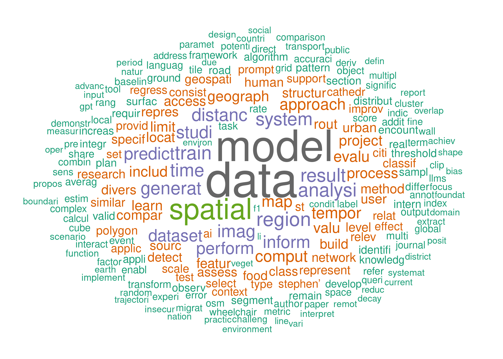

Reproducibility Review AGILE 2026
Daniel Nüst, Carlos Granell, Frank Ostermann
26 Februar, 2026

Introduction
This document includes scripts and text analysis to support the reproducibility review at the AGILE conference 2026, which is organised by the team of the Chair for Geoinformatics, TU Dresden, Germany.
Find out more online about reproducible
publications at AGILE and the review
process, and visit the Reproducible AGILE website: https://reproducible-agile.github.io/.
The code of this document is published on GitHub in the repository reproducible-agile/reviews-2026,
where you can inspect the R code in the file
agile-reproducibility-reviews.Rmd and find instructions for
using this document to support the reproducibility review.
The report
parameter private_info can be set to yes
to show information which cannot be shared publicly, such as author
names, titles, or excerpts of not accepted submissions, and to upload
review files to private shares, which requires authentication. If you
read this report publicly online, you are reading the version without
private information. If you are interested in the full version, please
contact the AGILE chairs or the authors of this report.
Wordstem analysis of all submissions
For the following table and figure, the word stems were extracted
based on a stemming algorithm from package quanteda.
The word cloud is based on 215 unique words occuring each at least 100
times, all in all occuring 40321 times which comprises 38 % of non-stop
words.
| place | wordstem | n | # papers | % papers |
|---|---|---|---|---|
| 1 | data | 1377 | 25 | 100 |
| 2 | model | 1227 | 25 | 100 |
| 3 | spatial | 749 | 25 | 100 |
| 4 | region | 450 | 22 | 88 |
| 5 | analysi | 427 | 25 | 100 |
| 6 | train | 427 | 18 | 72 |
| 7 | result | 421 | 25 | 100 |
| 8 | system | 405 | 25 | 100 |
| 9 | time | 397 | 24 | 96 |
| 10 | generat | 395 | 25 | 100 |
| 11 | imag | 388 | 15 | 60 |
| 12 | distanc | 387 | 17 | 68 |
| 13 | studi | 371 | 23 | 92 |
| 14 | inform | 370 | 25 | 100 |
| 15 | predict | 362 | 19 | 76 |
| 16 | perform | 353 | 25 | 100 |
| 17 | dataset | 351 | 22 | 88 |
| 18 | comput | 333 | 25 | 100 |
| 19 | tempor | 331 | 22 | 88 |
| 20 | map | 325 | 23 | 92 |

Wordstem cloud of AGILE 2026 full paper submissions
Reproducibility reviews
About
The assignment of reviews is done via a privately shared spreadsheet,
to handle potential non-public comments. The main outcome of the reviews
is a report, which is published in individual OSF projects as
components of the OSF project for the
reproducibility reviews 2026 or on ResearchEquals. The report should
be based on one of the templates in the report-template
folder in the repository for the 2026 reproducibility reviews.
Forming the reproducibility committee
Send an email to participate in the committee before the deadline reminders for full papers.
- Directly to all members of previous years’ reproducibility committees
- To AGILE Community Mailing List: mailto:agile-community@googlegroups.com
Reproducibility reviewer instructions
- Familiarise yourself with the AGILE Reproducibility Review Process; refresh your memory of the Reproducibility Reviewer Guidelines in the Reproducible Paper Guidelines the following steps are just a tl;dr version
- Take a look at the review report templates in RMarkdown and Office (.docx & .odt) - even if you’re not using it, it gives you guidance on structure and content; you are welcome to write your report with any tool that can produce a PDF
- Go to the shared spreadsheet reproducibility reviewers and find your assignments
- Access your reproducibility package from the shared
cloud folder, which includes the following files named using the
submission identifier, here using
000as example:000.pdf- the submission manuscript (may be updated when authors upload new reports, ideally though you receive revisions directly from the authors)000_authors.html- an HTML file with author names and a handy link to write a message to all authors CC’ing the reproducibility committee chair(s)000_reviews.html- the scientific reviews with reviewer names redacted - useful to consider to be prepared for upcoming changes in the submission and to check for comments on data, code, software, or even reproducibility
- Contact the author(s), e.g., using one of the template below; in the first email it makes sense to use all authors’ contact emails that are mentioned in the paper, even if there is one “corresponding author” listed, because we do not have the time to possibly wait for someone who is not available anymore, and it also helps with getting attention; in future communications, you can reply to the person who got back to you and kindly ask them to keep in the loop (or in CC) who needs to be kept there.
- Conduct your reproducibility review and write the
report
- Don’t forget to take a look at the scientific reviews for comments on reproducibility; do not worry about the science or read the full paper, unless it really interests you
- Check the authors and their affiliations of the submission - is there a relation (e.g., former colleague, current supervisor) that may be seen as inappropriate for you as a reproducibility reviewer? Is there a conflict of interest? If so, please contact the reproducibility chair, and ask via email to the committee members if another reproducibility reviewer would be available to switch assignments
- If code is available on GitHub/Lab, please fork the project into the Reproducible AGILE organisation respectively the GitLab subgroup “reviews”; ask Daniel to get the permissions for the organisations
- If need be, limit the review scope, e.g. reproduce only a specific figure; the reproducibility review should not take you longer (not counting computation time) than a scientific review, and even computation times should not expand longer than a working day
- Send the report to the original authors of the paper and add the reproducibility chair in CC, see template below;
- Add a new component to the OSF
project for 2026 reproducibility reviews OR create a new
module on ResearchEquals
- On OSF
- Use the European storage location, “Frankfurt”
- Name the component
Reproducibility review of: <FULL PAPER TITLE HERE> - Use license “CC-BY 4.0 (Free)”
- Keep the project private until the publication of the paper (we don’t want to announce anything that is not our place to announce)
- Add all contributors to the review to the project (do not add all members of the committee as contributors)
- In the project configuration:
- disable the “Wiki”, unless you add content to it
- set the category of repository to “Other”
- On ResearchEquals
- Use the type “Reproducibility Report”
- Keep the project as a draft until the publication of the paper (we don’t want to announce anything that is not our place to announce)
- Add the reproducibility report as the main file after adding the paper’s final citation
- Add any additional files as “Supporting files” to the module
- Add datasets with a DOI to the “Reference list”
- Add the final paper to the “Reference list” using the DOI
- Add all contributors to the review to the module as authors (need to have an account on ResearchEquals)
- On both
- Copy the summary from the report to the description field of the project
- Add link to the project/record in the master spreadsheet and note the final expected DOI^
- Wait for final paper citation from publisher and add it to the report
- Add the to be expected DOI to your report and to the coordination
spreadsheet; for OSF, append the project ID of the OSF project in
capitals to
10.17605/OSF.IO/to guess the future DOI; for ResearchEquals, use the DOI displayed in the module draft
- On OSF
- After papers are published:
- Upload the report as a single PDF document and include in it the final citation for your report and the full reference to the (to be) published paper provided by the publisher; add supplemental material created by you
- Upload, if suitable/applicable, also the original material (add
LICENSE.mdand licensing information in the OSF project description in that case) if confirmed by the author - Double check that only the contributing people are listed as bibliographic contributors on the project (committee chairs are welcome to be non-bibliographic administrators for organisational purposes)
- Publish the component/module
- On OSF
- Create a DOI (double check if it is correct in the report)
- Wait for a hint from the reproducibility editor to create an “Open-ended” registration to snapshot the status of the OSF component/project (your project likely still needs the CODECHECK configuration file, see below in the chair instructions)
- On ResearchEquals
- Make a note that you revisit the module after the publication of the article so you can add the published paper to the module’s “Reference list”
Reproducibility chair instructions
- Create a repository like this one based on the previous year
- Screen the accepted papers
- Distribute the reproductions among the committee members
- Support committee members during reproductions, give feedback, advise on problems, …
- After reports publication
- Add reports on ResearchEquals to the collections Reproducible AGILE and CODECHECK
- Coordinate on the creation of
codecheck.ymlconfiguration files - Add the reports to the CODECHECK register
- After adding the reports to the CODECHECK register successfully, send a note to the reproducibility reviewers that they can create the Registration
- “Archive” the projects on GitHub so that they become read-only (instructions GitHub, instructions for GitLab)
- Double check all OSF projects have a DOI and a registration
- Contact conference chairs to coordinate on the presentation of the reproducibility review overview at the conference, e.g., at the AGILE meeting or the closing session
Colophon
This document is licensed under a Creative Commons Attribution 4.0 International License. All contained code is licensed under the Apache License 2.0.
Runtime environment description:
## R version 4.5.2 (2025-10-31)
## Platform: x86_64-pc-linux-gnu
## Running under: Ubuntu 22.04.5 LTS
##
## Matrix products: default
## BLAS: /usr/lib/x86_64-linux-gnu/blas/libblas.so.3.10.0
## LAPACK: /usr/lib/x86_64-linux-gnu/lapack/liblapack.so.3.10.0 LAPACK version 3.10.0
##
## locale:
## [1] LC_CTYPE=en_US.UTF-8 LC_NUMERIC=C LC_TIME=de_DE.UTF-8
## [4] LC_COLLATE=en_US.UTF-8 LC_MONETARY=de_DE.UTF-8 LC_MESSAGES=en_US.UTF-8
## [7] LC_PAPER=de_DE.UTF-8 LC_NAME=de_DE.UTF-8 LC_ADDRESS=de_DE.UTF-8
## [10] LC_TELEPHONE=de_DE.UTF-8 LC_MEASUREMENT=de_DE.UTF-8 LC_IDENTIFICATION=de_DE.UTF-8
##
## time zone: Europe/Berlin
## tzcode source: system (glibc)
##
## attached base packages:
## [1] stats graphics grDevices datasets utils methods base
##
## other attached packages:
## [1] tabulapdf_1.0.5-5 glue_1.8.0 rvest_1.0.5 xml2_1.5.2
## [5] httr_1.4.8 kableExtra_1.4.0 googlesheets4_1.1.2 googledrive_2.1.2
## [9] quanteda_4.3.1 here_1.0.2 wordcloud_2.6 RColorBrewer_1.1-3
## [13] tidytext_0.4.3 lubridate_1.9.5 forcats_1.0.1 dplyr_1.2.0
## [17] purrr_1.2.1 readr_2.1.6 tidyr_1.3.2 tibble_3.3.1
## [21] ggplot2_4.0.2 tidyverse_2.0.0 stringr_1.6.0 pdftools_3.7.0
##
## loaded via a namespace (and not attached):
## [1] tidyselect_1.2.1 viridisLite_0.4.3 farver_2.1.2 S7_0.2.1 fastmap_1.2.0
## [6] janeaustenr_1.0.0 promises_1.5.0 digest_0.6.39 mime_0.13 timechange_0.4.0
## [11] lifecycle_1.0.5 qpdf_1.4.1 tokenizers_0.3.0 processx_3.8.6 magrittr_2.0.4
## [16] compiler_4.5.2 rlang_1.1.7 sass_0.4.10 tools_4.5.2 utf8_1.2.6
## [21] yaml_2.3.12 knitr_1.51 askpass_1.2.1 stopwords_2.3 bit_4.6.0
## [26] curl_7.0.0 websocket_1.4.4 withr_3.0.2 grid_4.5.2 scales_1.4.0
## [31] cli_3.6.5 crayon_1.5.3 rmarkdown_2.30 generics_0.1.4 otel_0.2.0
## [36] rstudioapi_0.18.0 tzdb_0.5.0 dadjokeapi_1.0.2 cachem_1.1.0 chromote_0.5.1
## [41] parallel_4.5.2 selectr_0.5-1 cellranger_1.1.0 vctrs_0.7.1 Matrix_1.7-4
## [46] jsonlite_2.0.0 hms_1.1.4 bit64_4.6.0-1 systemfonts_1.3.1 jquerylib_0.1.4
## [51] ps_1.9.1 stringi_1.8.7 rJava_1.0-14 gtable_0.3.6 later_1.4.6
## [56] bspm_0.5.7 pillar_1.11.1 rappdirs_0.3.4 htmltools_0.5.9 openssl_2.3.4
## [61] R6_2.6.1 textshaping_1.0.4 rprojroot_2.1.1 vroom_1.7.0 evaluate_1.0.5
## [66] lattice_0.22-9 png_0.1-8 SnowballC_0.7.1 gargle_1.6.1 httpuv_1.6.16
## [71] bslib_0.10.0 Rcpp_1.1.1 fastmatch_1.1-8 svglite_2.2.2 xfun_0.56
## [76] fs_1.6.6 pkgconfig_2.0.3